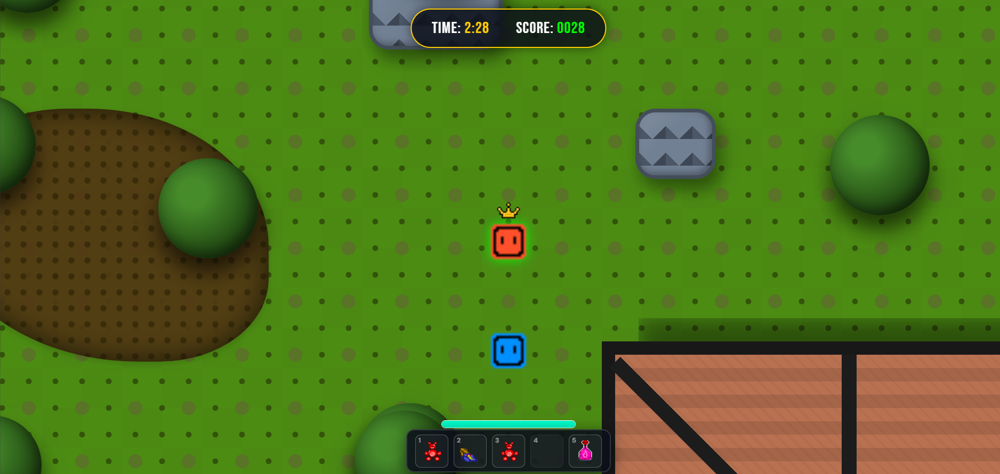
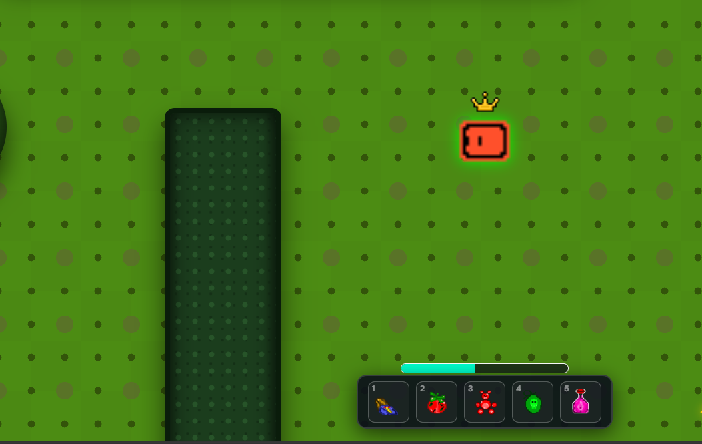
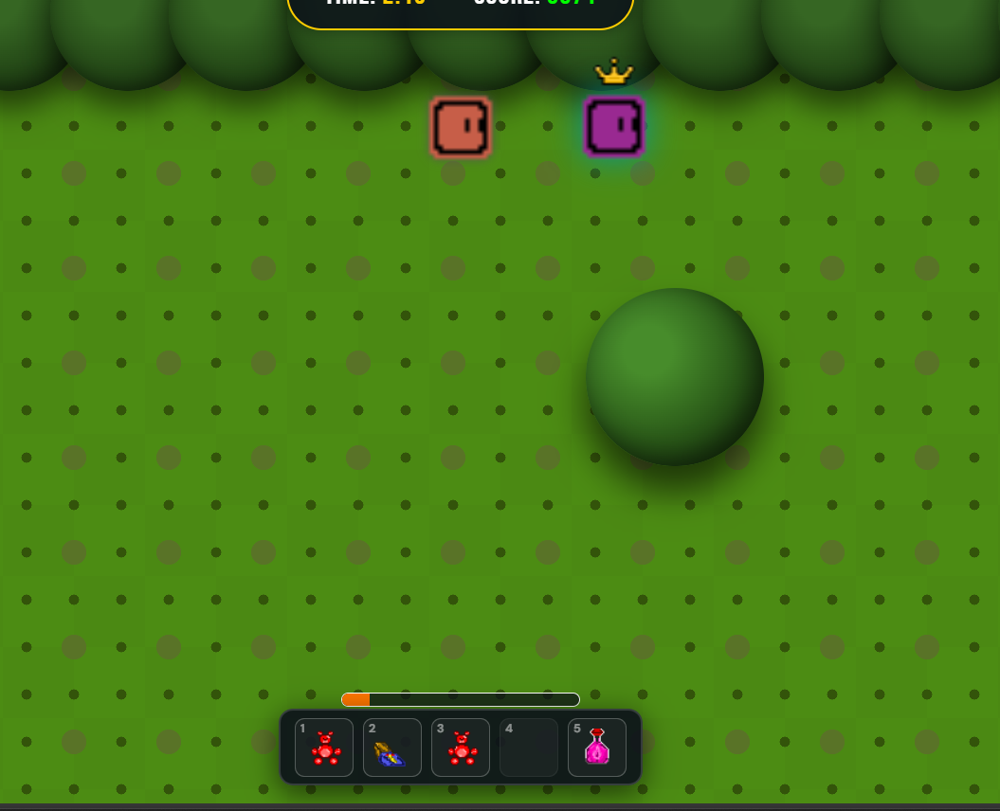

⌨ KEYBOARD LAYOUT
MOVE UP
W↑
MOVE LEFT
A←
MOVE DOWN
S↓
MOVE RIGHT
D→
MOVEMENT
ITEM 1
1
ITEM 2
2
ITEM 3
3
ITEM 4
4
ITEM 5
5
PAUSE MENU
ESC
SPRINT
SHIFT
ACTIONS
01
Grab the Crown
Locate the crown on the battlefield arena map and move directly over it to claim ownership. Securing custody marks you as the primary target vector.
02
Evade the Pursuers
AI bot modules will trace your coordinates immediately. Weave cleanly through static landscape obstacles like environmental log structures and house wall perimeters to disrupt tracking paths.
03
Deploy Combat Boosts
Trigger active item keys mapping to your loadout slot. Launch utility projectiles like Rotten Tomatoes or Fart Bombs to decrease opponent locomotion rates during tightly packed tracking sequences.
04
Accrue Gold & Points
Maintain possession variables across match updates to continuously claim round metrics. Accumulate resources securely to unlock cosmetic marketplace nodes and challenge profile updates on the dashboard ledger.

Image Missing
images/tutorial_image1.webp
Match View & Score Tracker

Image Missing
images/tutorial_image2.webp
Stamina Meter & Inventory Hotbar

Image Missing
images/tutorial_image3.webp
Crown Pursuit & Active Buffs